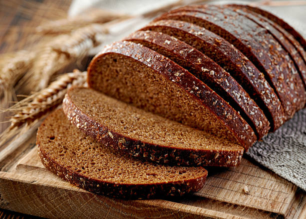

Rye Bread

Description
A great accompaniment for your pickle soup
Ingredients
- 2 packages dry yeast
- 2 1/2 cups warm water
- 2/3 cup molasses
- 2 tablespoons caraway seeds
- 1 tablespoon salt
- 1/4 cup vegetable oil
- 1/4 cup cocoa powder
- 2 cups rye flour
- 5 cups bread flour
Steps
- Dissolve the yeast
- Make the dough
- Knead the dough
- Let the dough rise
- Divide the dough
- Shape the loaves
- Let the loaves rise
- Heat the oven
- Bake the loaves
- Eat the loaves and the fishes
Return to homepage